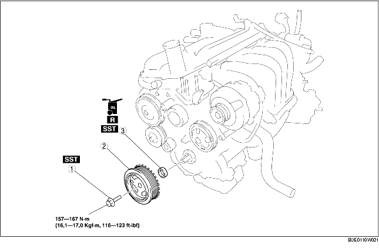

1. Déposer le couvercle de la batterie.
2. Débrancher le câble négatif de la batterie.
3. Déposer la courroie de transmission. (voir la section REMPLACEMENT DE COURROIE D'ENTRAÎNEMENT [ZJ, Z6].)
4. Déposer les différents éléments selon l'ordre indiqué dans le tableau.
5. Pour la repose, suivre l'ordre inverse de la dépose.

|
1
|
Boulon de fixation de poulie de vilebrequin
(voir la section Note sur la dépose de boulon de fixation de poulie de vilebrequin)
(voir la section Note sur la repose de boulon de fixation de poulie de vilebrequin)
|
|
2
|
Poulie de vilebrequin
|
|
3
|
Joint d'huile avant
(voir la section Note sur la dépose de joint d'huile avant)
(voir la section Note sur la repose de joint d'huile avant)
|
1. Maintenir la poulie de vilebrequin à l'aide des outils SST.
2. Déposer le boulon de fixation de la poulie de vilebrequin.
1. Déposer la lèvre du joint d'huile à l'aide d'un couteau aiguisé.
2. Déposer le joint d'huile à l'aide d'un tournevis à tête plate dont la pointe est protégée par un chiffon, afin d'éviter d'endommager le joint d'huile d'embrayage.
1. Appliquer de l'huile moteur propre sur le nouveau joint d'huile avant.
2. Insérer manuellement le joint d'huile avant dans le carter avant du moteur.
3. Enfoncer le joint d'huile avant à l'aide de l'outil SST et d'un marteau.
1. Maintenir la poulie de vilebrequin à l'aide des outils SST.
2. Serrer le boulon de fixation de la poulie de vilebrequin.